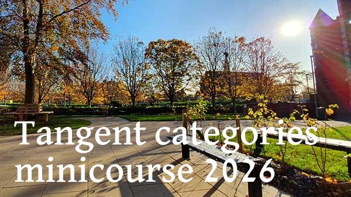

13–16 October 2026. Livingstone Tower, Department of Computer and Information Sciences, University of Strathclyde.

| Time | Lecture |
|---|---|
| 09:00–09:30 | Registration and coffee |
| 09:30–10:30 | Tangent categories Geoffrey Cruttwell |
| 10:30–11:00 | Coffee break |
| 11:00–12:00 | Containers Neil Ghani and Orestis Melkonian |
| 12:00–14:00 | Lunch |
| 14:00–15:00 | Tangent categories Geoffrey Cruttwell |
| 15:00–15:15 | Short break |
| 15:15–16:15 | Containers Neil Ghani and Orestis Melkonian |
| Time | Lecture |
|---|---|
| 10:00–11:00 | Containers Neil Ghani and Orestis Melkonian |
| 11:00–11:30 | Coffee break |
| 11:30–12:30 | Tangent categories Geoffrey Cruttwell |
| 12:30–14:00 | Lunch |
| 14:00–15:00 | Containers Neil Ghani and Orestis Melkonian |
| 15:00–15:15 | Short break |
| 15:15–16:15 | Tangent categories Geoffrey Cruttwell |
| Time | Lecture |
|---|---|
| 11:00–12:00 | Tangent categories Geoffrey Cruttwell |
| 12:00–13:00 | Lunch |
| 13:00–14:00 | Containers Neil Ghani and Orestis Melkonian |
| 14:00–14:15 | Short break |
| 14:15–15:15 | Tangent categories Geoffrey Cruttwell |
| 15:15–15:45 | Coffee break |
| 15:45–16:45 | Containers Neil Ghani and Orestis Melkonian |
| 17:00 | Pub |
Abstract: Tangent categories are a "minimal" categorical setting for differential geometry. Previous work on categorical machine learning has used cartesian differential categories (and variants of it), but that abstraction is not flexible enough to work with learning on manifolds. Tangent categories enable one to "do differential geometry" on manifolds and many other settings, and thus represent the "next step" for the study of categorical machine learning.
In this tutorial I'll introduce what tangent categories are, give a variety of models for their axioms, and show some of their theory. Basic category theory knowledge is assumed, but I will not assume any knowledge of differential geometry or categorical machine learning.
Abstract: A container is a strikingly simple idea: a set of prompts, and for each prompt a set of admissible responses. From this modest starting point comes an enormous range of structure — every ordinary data type arises as the least fixed point of a container, and the functors they denote, the polynomial functors, sit at the heart of type theory, category theory, and functional programming. A container is at once a data type and a typed interface, specifying for every prompt exactly which responses are valid, and it carries a rich algebra: several monoidal structures, a well-behaved notion of morphism, closed structure, and a derivative.
This series introduces containers from the ground up, and then follows them into computer science. We cover the basic theory — the definition and its readings, the extension to polynomial functors, container morphisms, the monoidal and closed structures, free and cofree containers, monads over containers, and indexed and directed containers — before turning to applications: machine learning, agentic AI, theorem proving, and differential algebra.
Registration has now closed. Attendance is free, but participants needed to register for planning purposes.
The lectures will take place in Livingstone Tower, which is part of the University of Strathclyde. Livingstone Tower is in central Glasgow, near to both Glasgow Queen Street station and Glasgow Central Station.
There will be signs from the entrance of Livingstone Tower each day.
We will do our best to livestream and record the lectures. Obviously if you would like to interact with the lecturers by asking questions, etc, in-person attendance is strongly recommended.
The livestream will be available here: https://www.youtube.com/@msp.strathclyde/streams.